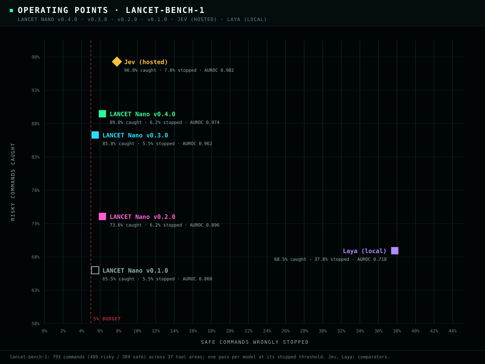
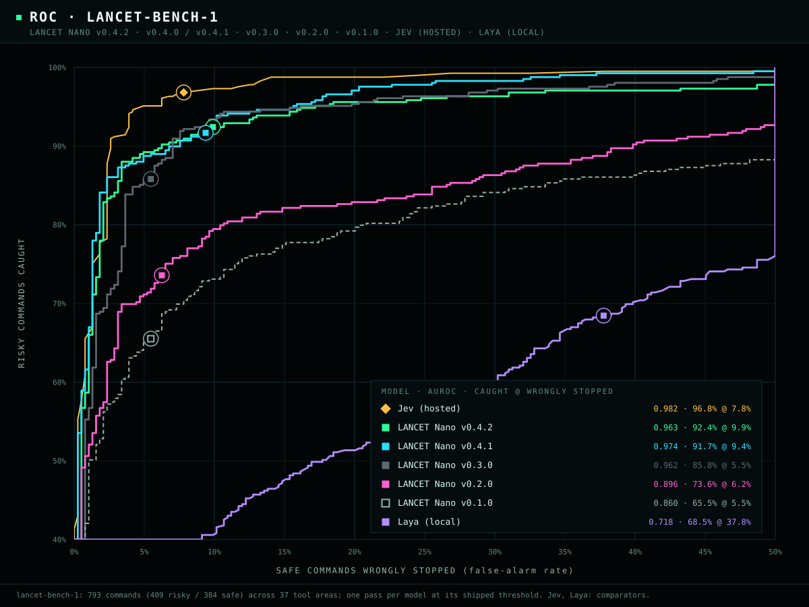
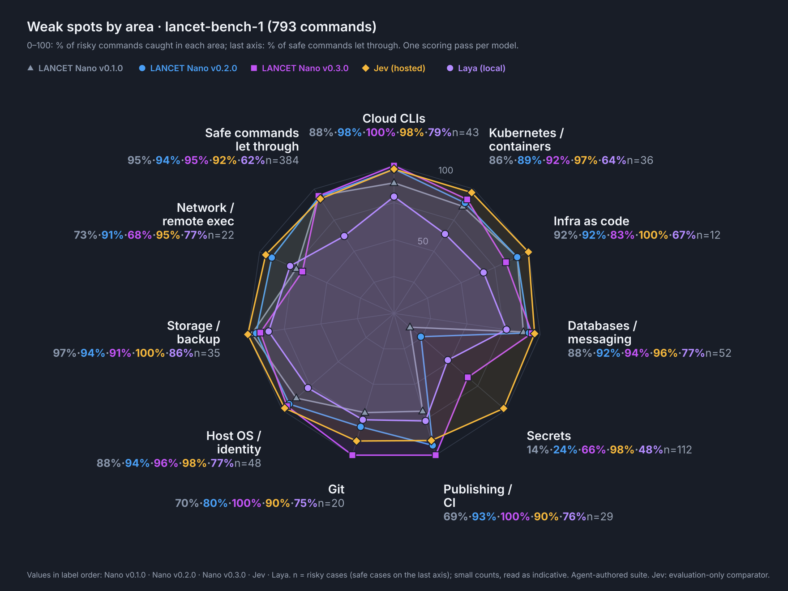

lancet-bench-1: 409 risky and 384 safe commands across 37 tool areas, frozen and screened against all training data before v0.3.0's training data existed.

| Model | Risky caught | Safe stopped | AUROC | Secrets caught | Parameters | Runs on |
|---|---|---|---|---|---|---|
| LANCET Nano v0.3.0 | 85.8% | 5.5% | 0.962 | 66% | 110 M | CPU, local, offline |
| LANCET Nano v0.2.0 | 73.6% | 6.2% | 0.896 | 24% | 35 M | CPU, local, offline |
| LANCET Nano v0.1.0 | 65.5% | 5.5% | 0.860 | 14% | 35 M | CPU, local, offline |
| Jev (hosted) | 96.8% | 7.8% | 0.982 | 98% | undisclosed | hosted API |
| Laya | 68.5% | 37.8% | 0.718 | 48% | 421 M | GPU, local |
The benchmark's labels were written by the developer, an AI agent, so this is diagnostic evidence, not independent acceptance. Jev and Laya received a fixed task context; Nano sees only the command.
On the upstream ShellRisk sets (not agent-authored, never trained on), v0.3.0 caught 48.9% vs v0.2.0's 48.3% and stopped 6.3% vs 9.7% of safe commands; on the smaller holdout set it caught fewer (41.9% vs 45.9%).
v0.3.0 was released by owner exception after one overly strict preregistered check (the ShellRisk catch-rate lower bound) failed; the details are in the model card.
# 1. verify the download, then the bundle
certutil -hashfile lancet-v0.3.0-nano-cpu-int8.zip SHA256
python verify_bundle.py --strict
# 2. install three pinned CPU dependencies
python -m venv .venv
.\.venv\Scripts\python.exe -m pip install -r requirements.txt
# 3. classify (JSON lines in, JSON lines out)
$env:OPENBLAS_NUM_THREADS = '1'
'{"command": "terraform destroy -auto-approve", "shell": "bash"}' |
.\.venv\Scripts\python.exe classify.py --model model{"score": 0.997, "classification": "risky", "reason": null,
"experimental": true, "executionAuthorized": false, ...}.venv/bin/python. Those platforms were not benchmarked.git lfs pull, and use bundle/.v0.3.0 fine-tunes the Salesforce CodeT5-base encoder from its pinned upstream weights, with no earlier LANCET checkpoint, using class-balanced sampling. Its labels come from project authoring and documentation, not from another model's opinions:
sensitive markings on returned fields, so commands that print credentials are risky.keys list and --with-decryption.| Training source | Rows |
|---|---|
| Project-authored pairs | 9,906 |
| tldr-pages examples | 6,126 |
| Secrets family (project-authored) | 5,328 |
| Retired evaluation suites | 4,358 |
| Developer commands (V5 pool) | 3,054 |
| Azure / GitHub / kubectl / Docker CLI | 1,428 |
| AWS CLI operations | 927 |
No language model, hosted API or human labeler produced any training label.
Development and calibration used tools and families held out from training.
The label rules are heuristic and were not human-adjudicated.
review, with no silent truncation.not_flagged is not execution authorization or a safety guarantee.
Built on Salesforce CodeT5-base by Yue Wang, Weishi Wang, Shafiq Joty and Steven C. H. Hoi (Apache-2.0).
Training commands come from tldr-pages (CC BY 4.0, © the tldr-pages team and contributors), botocore (Apache-2.0, © Amazon.com, Inc. or its affiliates), the Azure CLI and GitHub CLI (MIT), and kubectl and Docker CLI (Apache-2.0), plus the datasets credited in the notices. None of them endorses LANCET.
Model: Apache-2.0. Runtime: MIT. Datasets are not included or relicensed.
See the NOTICE, the third-party notices and the licenses.